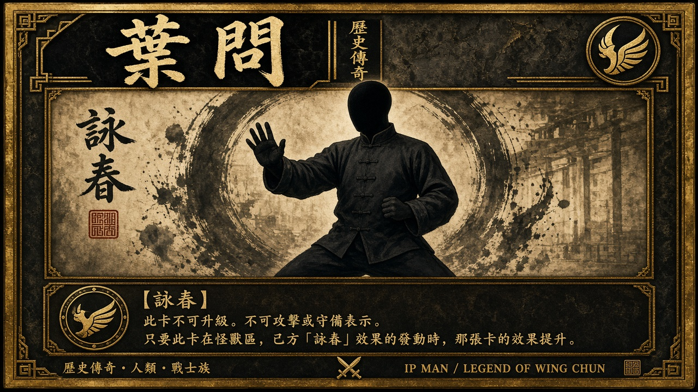

角色卡 · 一等 · 香港
葉問 · 人物傳
詠春 · 香港 · 採集卡 2026-10-18
戰鬥力 1.6–2.2歷史估計｜編輯意見｜非官方 · 影視唔當實戰
絕招 跟 #ranks 角色卡 · 吹水／表演／傳說唔當高戰力 · 編輯意見
- 傳承可核詠春木人樁體系公開傳承標準訓練。影視改編唔加分。
- 傳承可核黏手（Chi Sao）葉問系接觸訓練。弟子系教學可見，唔等於本人賽績。
- 門派基本小念頭／尋橋結構公開教學生態可核。影視改編當娛樂，唔當實戰。
一句註現代詠春公開傳承樞紐；戰力跟卡，唔靠電影定論。
彩色公開照＋TCG 框。來源 Wikimedia Commons File:Yip_Man.jpg（Public domain）。卡面字係草圖，戰鬥力以呢頁為準。載入失敗先用 Commons 團體照作備援。